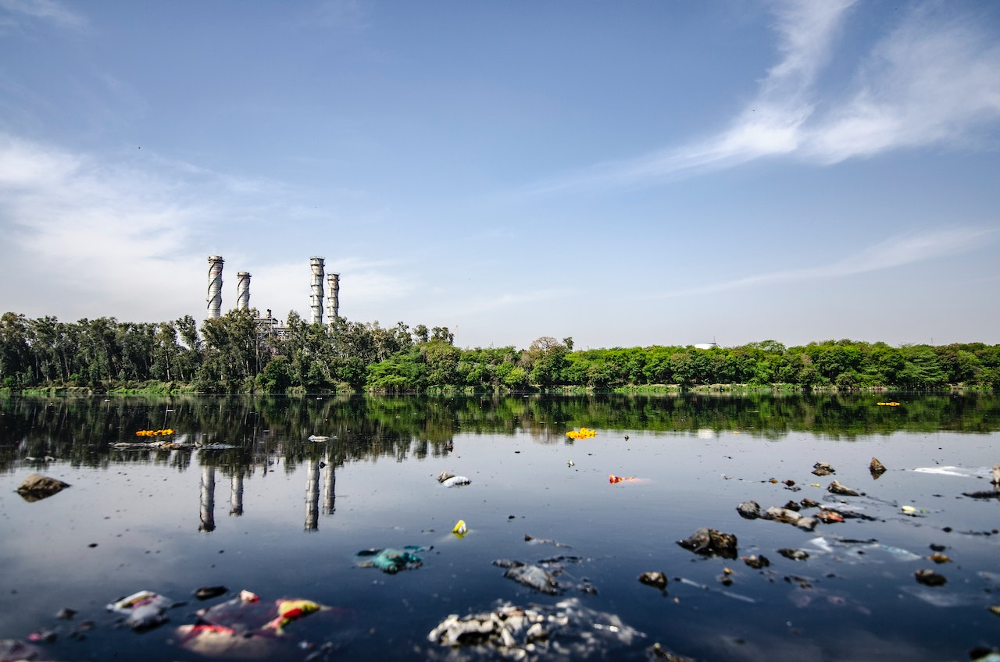
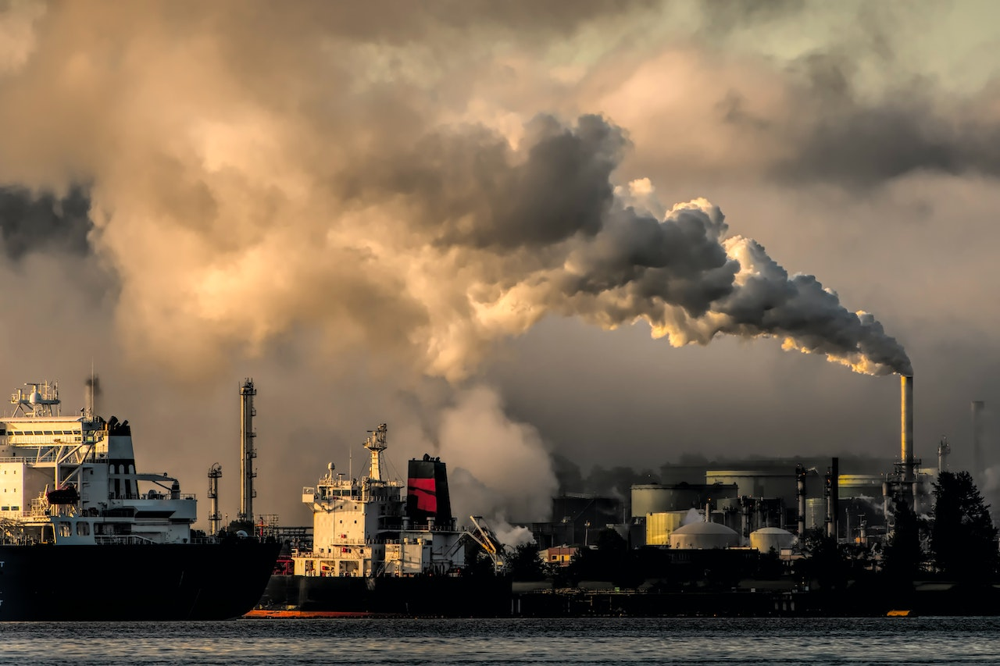

Os danos que o descarte inadequado de lixo pode causar!
Poluição do Solo e da Água
Quando o lixo é descartado de maneira inadequada, substâncias tóxicas presentes nos resíduos, como produtos químicos domésticos, baterias e produtos eletrônicos, podem infiltrar-se no solo e contaminar a água subterrânea. Isso compromete a qualidade dos recursos naturais essenciais para a vida.

Escassez de Recursos Naturais
A produção de produtos descartáveis frequentemente requer a extração de recursos naturais finitos, como água e minerais. Isso contribui para a escassez desses recursos essenciais e agrava os problemas de sustentabilidade global.
Contaminação de Alimentos
Descartar produtos que ainda estão em boas condições ou que poderiam ser reciclados representa um desperdício de recursos valiosos, incluindo materiais, energia e mão de obra envolvida na produção desses itens.
Emissões de Gases de Efeito Estufa
A decomposição de resíduos orgânicos em aterros sanitários produz gases de efeito estufa, como metano. Esses gases contribuem significativamente para o aquecimento global e as mudanças climáticas, intensificando problemas como o aumento das temperaturas e eventos climáticos extremos.

Incêndios em Aterros
O acúmulo de resíduos orgânicos e materiais inflamáveis em aterros sanitários mal administrados pode resultar em incêndios frequentes. Além dos riscos à saúde pública, esses incêndios liberam poluentes no ar, causando problemas respiratórios e ambientais.
Escassez de Espaço em Aterros Sanitários
O descarte inadequado de lixo contribui para o rápido preenchimento dos aterros sanitários, exigindo a criação de mais locais de disposição de resíduos. Isso pode levar à degradação de áreas naturais e ao uso excessivo de terra para fins de eliminação de lixo
Impacto na Vida Selvagem
Animais frequentemente ingerem ou ficam presos em lixo descartado de forma inadequada. Plásticos, por exemplo, podem ser confundidos com alimentos e causar sufocamento ou bloqueio no sistema digestivo dos animais. Isso resulta em ferimentos e mortes, afetando negativamente a biodiversidade e os ecossistemas.

Desperdício de Recursos
Descartar produtos que ainda estão em boas condições ou que poderiam ser reciclados representa um desperdício de recursos valiosos, incluindo materiais, energia e mão de obra envolvida na produção desses itens.
Impactos na Saúde Humana
A exposição a resíduos perigosos e tóxicos, como produtos químicos industriais e eletrônicos descartados incorretamente, pode resultar em problemas de saúde, como doenças respiratórias, dermatológicas e até câncer, afetando as comunidades próximas a áreas de descarte inadequado.
Destruição de Habitats Naturais
descarte impróprio de lixo pode causar danos ambientais significativos, incluindo a destruição de habitats naturais, como florestas e áreas úmidas, que são vitais para a biodiversidade e o equilíbrio dos ecossistemas.